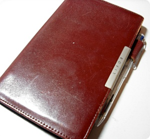
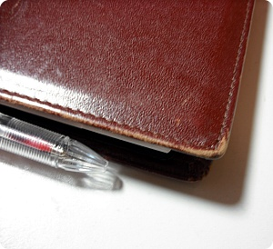
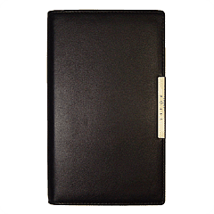
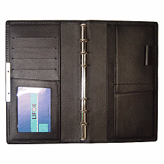
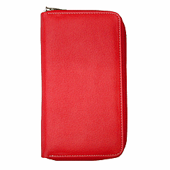
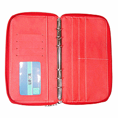

요게 내 기억으로는 2001년 말에 구입했응께
컥;; 거진 8년을 넘게 써왔네;;
그렇다고 항상 가지고다니믄서 사용하는건 아니구
중요한 마감이나 시험공부할때
2달~2주 정도만 사용하고 또 어딘가 구석에 넣어놓고
잊어버리는 그런용도인데^^;;;;
이번에도 학교 졸작할때 한 2개월 잘사용한것 같다
맨날 들고댕기믄서 그날그날 끝내야 할 작업 정리해놓고
튜토 시간이나 워크샵 날짜 등등;;;
근데 졸작마감 일주일전쯤 링바인더가 똑 떨어져 나갔음;;
그당시에는 "하필이면 이럴때!!! 이럴때에에~!!! ;ㅂ;"
를 울부짖으면서 그냥 바인더랑 가죽케이스 분리된채로
들고다니면서 썼는데 마감후에 슬슬 새 케이스를 찾으러 댕겼다능;;;

구입할 당시 동네 문구점에서 말도안되는 싼 가격으로 할인된걸 산건데
이번에 LIFOR 홈페이지 가보니까 그래도 이넘이
천연 소가죽에 가격이 촘 나가는 넘이였음;;;
(아니면 세월이 흐른만큼 가격이 올랐다던가;;)
다른 시스템 다이어리와는 다르게
똑닥이 버튼도 없고
엄청 얇아서 완벽한 내취향 +_+
뿌라스 저 아~~~~무것도 없는 심플한 디자인 ㅋㅋㅋㅋ
아저씨스러운(........;;) 오피스용품 넘 좋아요//ㅂ//

새걸사네 어쩌네 이번엔 좀 다른디자인을 골라볼까~하던 와중
동생곰이 졸업기념으로 자기가 선물해 준다고해서
어이쿠 이넘 다컸네 얼쑤 좋구나~하고있었는데^^;;;;
역시 가죽이란게 쓰면쓸수록 이뻐지는게(....;;)
어쩐지 8년이 넘게 (랜덤이긴하지만;;) 쓰던걸 버리고 새걸 구입하는게
살짝 망설여 졌다;;;;
뭐 결국은 혹시나 하는 맘에 본드로 붙여봤는데
철썩 잘 붙었다는^^
나에겐 강력접착제가 있었어 ㅎㅎㅎㅎㅎㅎㅎㅎㅎ


요건 LIFOR홈에서 가져온
색만 다른 같은모델이구


요것도 살짝 마음에 들었었음
근데 펜꽂는게 없어서 탈락
뭐 결국은 동네 문구점/ Filox홈페이지/ Lifor홈페이지
실컷 뒤지고 가격비교하고
원래 쓰던거 본드로 붙여다능 그런이야기.......OTL
Oldies but Goodies 인겝니다 ㅎㅎㅎㅎ